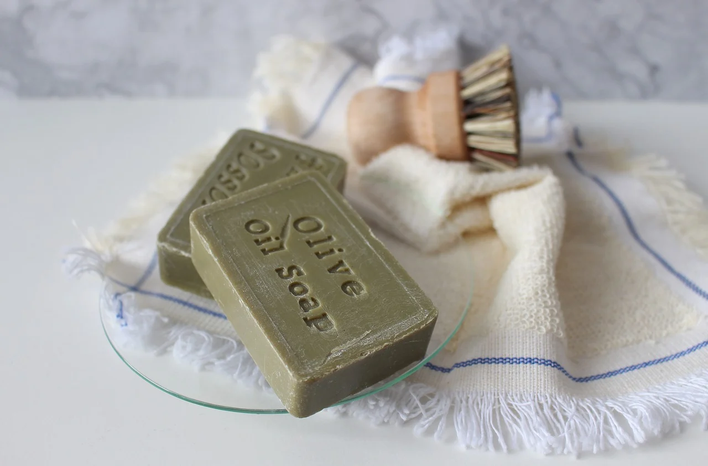
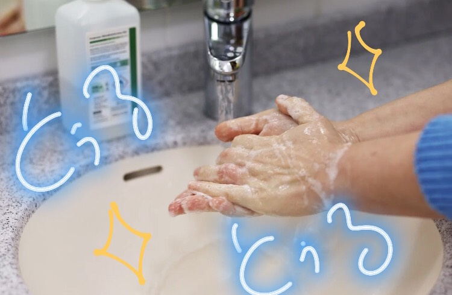

-----Souvenir-----
観光客が多く訪れるミハスではお土産も充実しています。
南スペイン独特の可愛らしい陶器やお皿などがおすすめです。
部屋のインテリアとして取り入れるもの良いかもしれませんね。
さらに、アンダルシア地方ではオリーブの生産地としても知られています。
肌に潤いを与えてくれるオリーブの石鹸は様々な肌のトラブルを解決してくれます。
ミハスでは至る所にかわいい雑貨屋さんがあるので気になるお店があったら是非立ち寄ってみてください。
旅の思い出に残る、素敵な雑貨が見つかるかもしれませんよ！
